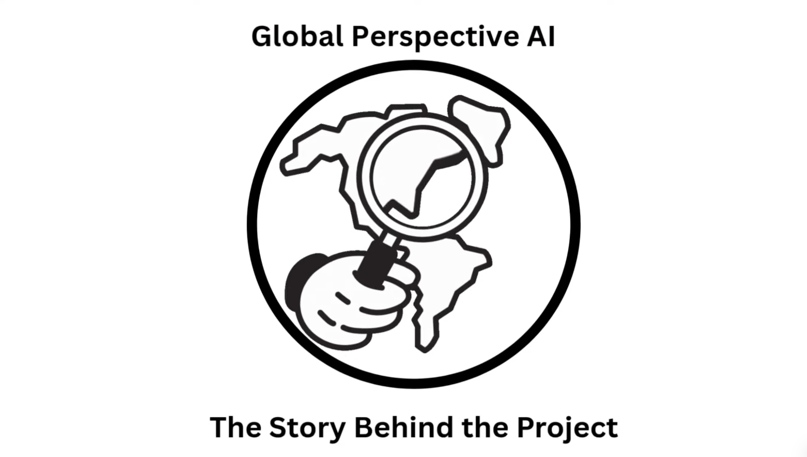

Video · YouTube
Global Perspective AI

Watch on YouTubeNortheastern University
Data Science & Economics
A selection of recent projects exploring data pipelines, visualization, machine learning systems, databases, and software development.
Video · YouTube

Watch on YouTubeVideo · MP4
DS3500 · Data pipeline
Retrieves species-occurrence records, cleans them with retention metrics, enriches state data, and summarizes observations by state and month.
View on GitHubDS3500 · Data engineering
Combines air-quality and public-data sources into a structured workflow for cleaning, merging, testing, and analysis.
View on GitHubDS4200 · Visualization
Explores Boston tree locations and species composition through Tableau maps, charts, and a project report.
View on GitHubDS3500 · Visualization
Processes transit data and turns station-level movement into animated visualizations for exploring patterns across the Red Line.
View on GitHubDS4300 · Data engineering
Builds a social timeline with Redis data structures, precomputed timeline reads, and performance benchmarking.
View on GitHubDS4300 · Document database
Uses API data, nested JSON, MongoDB queries, aggregation, and visualization to analyze a complete Pokémon dataset.
View on GitHubDS3500 · Web scraping
A Scrapy prototype that follows filmography pages, extracts linked records, and exports the collected results as JSONL.
View on GitHubDS4300 · Time-series data
Explores a housing-market dataset with a time-series database workflow and query-driven analysis.
View on GitHubData visualization
Uses Tableau to explore relationships and patterns in global happiness data through interactive visual analysis.
View on GitHub